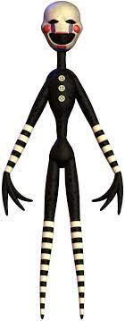

Secondary Characters
There are some characters that play an important role in the plot of FNAF that arent always included
in the game play. Some of the following are what I call, secondary characters.
Micheal Afton
The son of William Afton is Michael Afton,
who is also the brother of the Crying Child
from the fourth game and Elizabeth Afton. In addition,
he serves as the manager and
owner of Freddy Fazbear's Pizza Place.
Purple Guy (William Afton)
William Afton, who is
referred to by various names including the Purple Guy,
is the primary villain of the Five Nights at Freddy's series.
He co-established Fazbear Entertainment with Henry Emily, and is also the father of Michael Afton,
Elizabeth Afton, and the Crying Child.

Puppet
The Puppet was haunted by William Afton's first victim,
Charlotte Emily, the daughter of Henry Emily